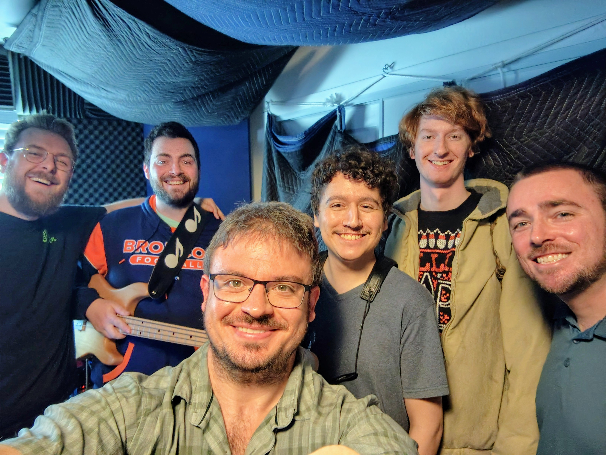
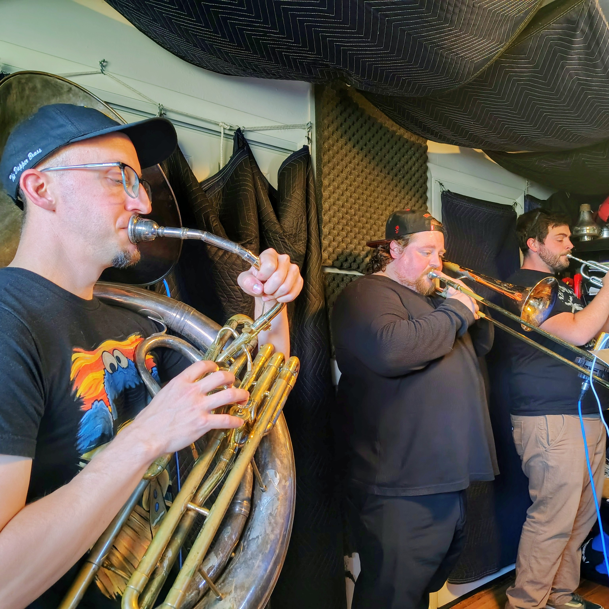

Recording Services
Looking for a studio to record your next project? Need a high-quality recording of your next live concert? Horn Star Studios just might be what you're looking for! I can host studio recording projects at my sound-treated office in Arvada, or I can bring my portable recording setup to your location.
Keep scrolling to learn more about what I offer and check out some of my work samples!
Email for InquiriesWork samples
Suncatcher - Solaire
(jazz fusion)
Dapper Brass - 99 Red Balloons
(brass band)
Corgi Cartel - The Climb
(funk / hard rock)
Castle Rock Trombone Quartet - Sleigh Ride 7/8 (classical)
Drew Zaremba, composer - Choro no. 2
(classical/Latin)
The Cat's Glasses - Silver in Red (jazz)
Educator Discount
Are you a music teacher in need of professional-quality recordings for your band, orchestra, or choir? Are you a music student looking to record an audition or demo, and need something more polished than phone audio? I've got you covered!
I've been involved in music education for over a decade, and I understand the needs and day-to-day realities of music students and teachers. I also understand that schools and parents don't have unlimited budgets, so I offer a discounted teacher/student rate. Send me an email if you'd like to know more!
Email for More InformationWhy work with me?

As a professional musician, I've spent a great deal of time on the player's side of the microphone in a wide variety of styles, including my own music and original works by numerous living composers, arrangers, and songwriters. I know firsthand what goes into a recording project - the hours of preparation, the pressure to play a clean take on a finite schedule, the psychology of keeping your ears fresh and your morale up over the course of a long playing day.
I know that musicians play at their best when stress is low, and a patient and calm audio engineer can make the difference between an energetic, inspired recording and a timid, cautious one. When you work with me, you will get guidance from a professional set of ears, but you will never be yelled at or scolded for how you play. I've been in your shoes, and I believe in treating musicians the way I'd want to be treated. In short, I'm your audio engineer, not your producer - I'm here to capture your creative vision and bring it to life, not to tell you what that vision is supposed to be.
What I specialize in

Every recording studio specializes in different genres, sound concepts, and workflows, so it's important to find one that fits the needs of your project.
Because of my background in classical music and jazz, I like recordings that capture writing and performance in a way that sounds authentic and "real"; clean and clear without crossing the line into sounding overproduced or artificial. If you play styles of music that fit this aesthetic - classical, jazz, funk, brass bands, jam bands, indie rock, folk, and so on - then we'll be a great fit.
If you're playing music that involves more digital tracks, sampling, or heavily stylized mixes - rap, mainstream pop, EDM, etc. - that's also cool! But that's not my area of expertise, so you'll probably be happier looking into a different studio.